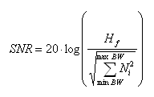

Signal to Noise Ratio (SNR)
Signal to Noise Ratio (SNR) is the ratio of the rms square value of the fundamental of the output signal to the rms sum of all other spectral components below Nyquist frequency, excluding harmonics and DC.

minBW and maxBW define the frequency range of the FFT results that is passed to the distortion calculation.
Hf is the fundamental of the output signal.
Ni (Noise) are the spectral components excluding harmonics.